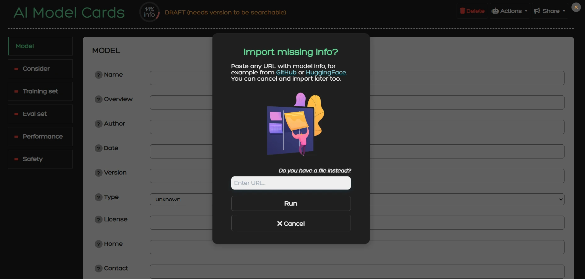
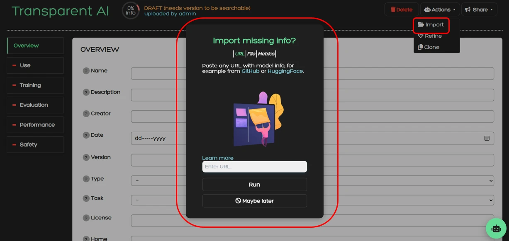
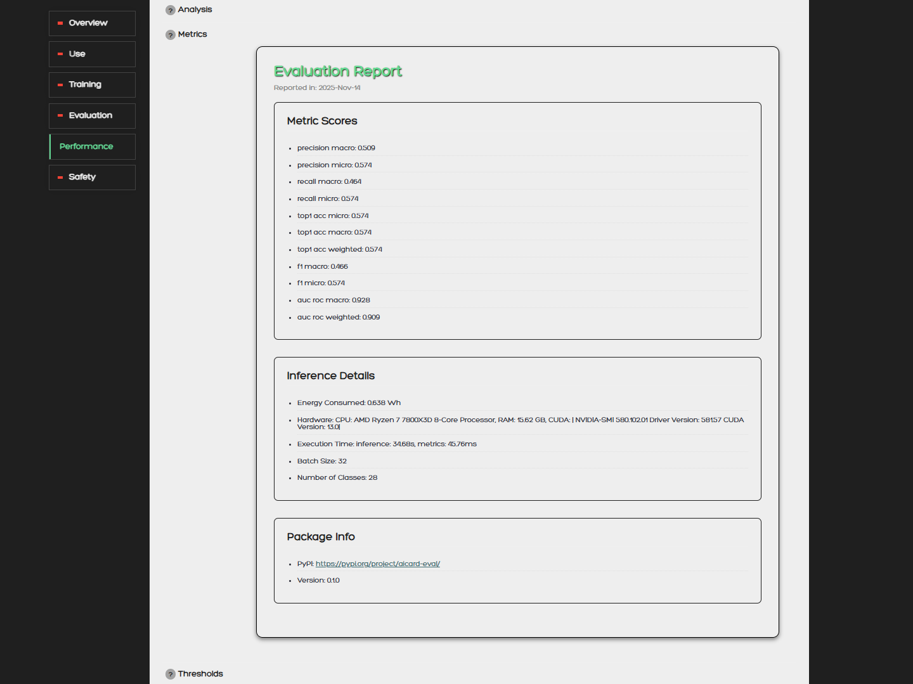
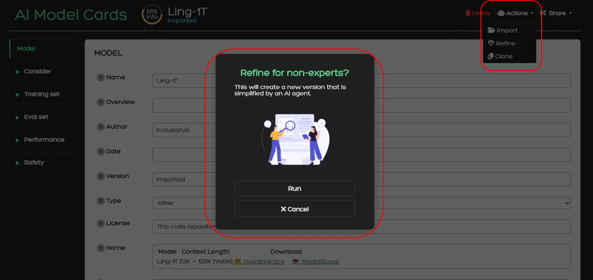
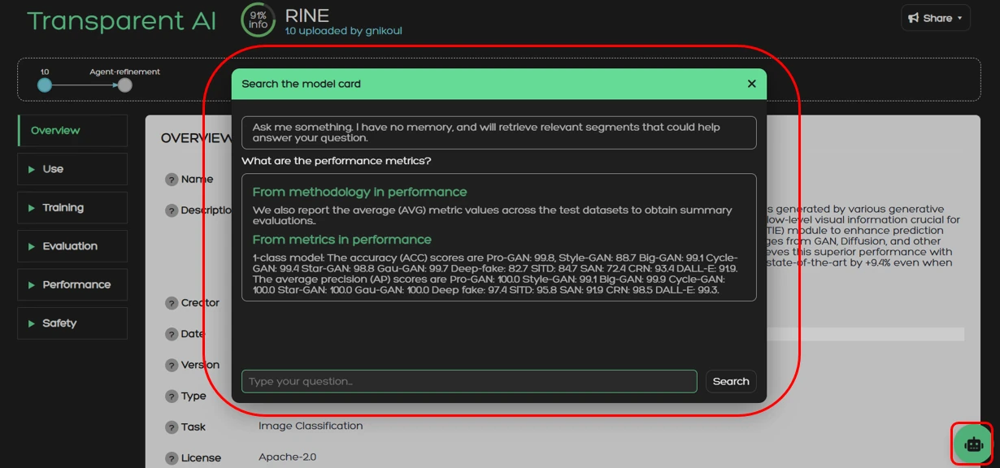
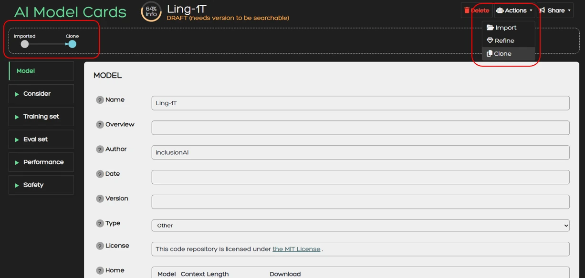
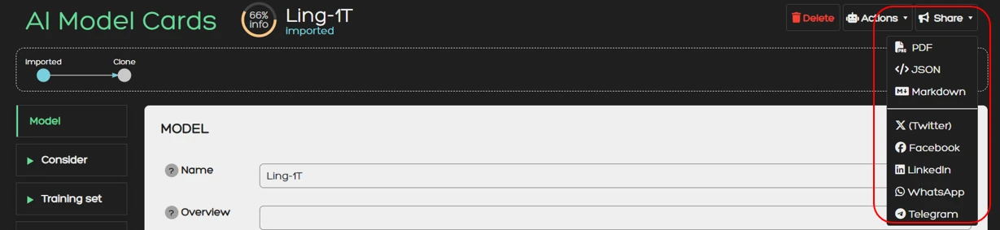

Handbook
Introduction
Our service
This service is developed under the AI-CODE Horizon project with Grant Agreement ID: 101135437. You can find the main page of the project along with all the services here. The purpose of this one is to provide a platform for creating, editing, and managing model cards.
So what is a model card? Briefly, it is a compact document that contains information about an AI model’s purpose, correct usage, training and evaluation methodology, performance, ethical risks, potential missuses, and more. Its goal is to promote transparency when distributing and deploying AI models.
Our service here aims to make high-quality model cards more accessible. THis, it first aims to assist AI model creators such as engineers, researchers, and developers to produce transparent models. This is achieved by equipping them with AI-powered tools to create model cards, and second to provide model cards that are comprehensible for both AI-experts and non-experts like journalists, data scientists, and media professionals.
Model cards
Model cards were first introduced by a Google research paper in 2018 with the intention to clarify the intended use, minimize unintended use, report performance, and in general provide a transparency report for ML and AI models.
In this service we provide a standardized model card format derived from our research and collaboration with experts in legal and ethical issues. We divide all information into six main sections:
1. Model details
Contains all basic information such as model name, overview, person or organization
developing the model, date of development, version, license and IP, citations, and any other similar
metadata about the model.
2. Considerations
Include intended use, software requirements, hardware requirements, technical
instructions, ethical risks, and similar information that provides guidance for correct usage.
3. Training and eval set
Contain information about the training and evaluations data sets such as link
or description of the dataset, motivation for choosing these specific data, reliance on standards
(e.g. ISO25, IEEE26), and whether the dataset is up to date, of high quality, and representative
of the intended deployment environment.
4. Performance
Consists of the performance metrics, decision thresholds, approaches to uncertainty
and variability of the results, and an overall analysis of the performance, biases, and fairness.
5. Safety
Includes all information regarding ethical aspects, safety concerns and caveats
in order to raises awareness about bad use and ethical risks.
| Model Card Fields | Content |
|---|---|
| Model Details |
|
| Considerations |
|
| Training Set |
|
| Eval Set |
|
| Performance |
|
| Safety |
|
Basics
Metrics
In Artificial Intelligence (AI) and Machine Learning, metrics are numbers that report how good or bad a model is performing. To produce such metrics we perform an evaluation run during which we give data to the model that it has not seen during training. When the AI model generates its output we compare this result with the correct answer to calculate the metrics. An explanation of the most common metrics is given bellow.
Accuracy
Shows how many predictions were correct. Example: with 100 images
model classifies 90 correctly → Accuracy = 90%.
Accuracy is simple, but it can be misleading. No information about individual classes.
Precision
Answers the question: “When the model says YES, how often is it right?”.
Example: model predicts 20 spam emails. Only 15 are actually spam → Precision = 15 / 20 = 75%
High precision means few false positives.
Recall
Recall answers the question: “Out of all real YES cases, how many did the model find?”
Example: 50 real spam emails. Model finds 40 of them → Recall = 40 / 50 = 80%
High recall means few false negatives.
F1 Score
Combines Precision and Recall into one number. High F1 score means both
Precision and Recall have high scores.
Mean Absolute Error (MAE) Answers the question: “On average, how far are the model's predictions from the real values?”. MAE measures the average size of the mistakes. When MAE is low predictions are close to the real values.
ROC AUC Score
Answers the question: “How well can the model separate positive cases from
negative cases?”. We measure this score for different thresholds. For example if
thresholds = 0.6, prediction above 0.6 are considered positive cases and bellow
0.6 negative cases. For ROC AUC Score 1.0 → perfect separation and for
0.5 → random guessing. High value means positive cases get higher scores than negatives.
AP (Average Precision)
Answers the question: “How precise is the model across different
confidence thresholds". The model predicts a class with a confidence thresholds.
We can accept or reject the prediction depending on the confidence thresholds.
AP is the average precision across different confidence thresholds.
mAP (Mean Average Precision)
Answers the question: “How precise is the model across many classes and across different
confidence thresholds". Following the AP score, the mAP is the average AP across
all classes. Mostly used in object detection and multi-class problems.
AR (Average Recall)
Answers the question: “How many of the real objects does the model manage to find
across different
confidence thresholds". Similar to AP we calculate the average recall across
different confidence thresholds.
mAR (Mean Average Recall)
Answers the question: “How many of the real objects does the model manage to find
across many classes and across different
confidence thresholds". Following the AR score, the mAR is the average AR across
all classes. Mostly used in object detection and multi-class problems.
IoU (Intersection over Union)
Answers the question: “How much does the predicted area overlap with the real area?”.
Often used in object detection and segmentation 0 → No overlap and 1 → Perfect overlap.
When IoU is high the predicted box matches the real object well.
Fairness
Fairness in AI is the attempt to correct bias in model decision. It usually refers to unfair outcomes against sensitive variables such as gender, ethnicity, disability and more. The importance of such topics differs between countries and cultures and thus there is no single definition of fairness. Nevertheless, such variables are important for the behaviour of systems that approve loans, screen job applications, detect fraud, recommend content and more. Biased AI can exclude people and reinforce existing inequalities.
Unfairness often derives from biased or incomplete training data, historical inequalities in the data, or metrics that optimize accuracy but ignore fairness. A fair system should produce similar outcomes for variables such as gender or ethnicity when such variables are irrelevant to the problem. In some cases fairness and accuracy can conflict. A model can be very accurate but unfair. A common practice to check the fairness of a system is to compare metrics like accuracy, precision, and recall across groups, acceptance or rejection rates, or false positives and false negatives per group. By trying to equalize these factors across groups the overall accuracy of the system can drop making a less accurate but more fair system.
Oversight
Oversight level describes how much control humans have over a system’s behavior and decision making. Below, we provide an explanation of the four categories, ranging from fully autonomous to fully human-supervised.
-
Self-learning / Autonomous
- Humans define goals, constraints, and initial training, but do not monitor or approve each action.
- The system may learn continuously from new data.
- Human involvement is typically limited to maintenance, audits, or review.
- This offers high efficiency and scalability, but also higher risk. Strong safeguards, monitoring, and clear accountability mechanisms are essential.
-
Example:
- A self-driving car navigates traffic entirely on its own, adjusting its path based on sensor input.
-
Human-on-the-Loop (HOTL)
- Decisions are executed without prior approval.
- Humans monitor performance and behavior.
- Intervention may include stopping the system, overriding outputs, or adjusting parameters.
- This balances efficiency and safety. It assumes humans can detect problems fast enough to prevent serious harm.
-
Example:
- An automated trading bot executes trades automatically, while a human supervisor monitors performance and can halt trading if anomalies appear.
-
Human-in-Command (HIC)
- The system cannot act beyond predefined boundaries.
- Humans retain final decision-making power at all times.
- Humans can shut down, reconfigure, or permanently disable the system.
- This ensures clear accountability and ethical control, especially in high-risk or regulated contexts.
-
Example
- An AI flags contracts with potential legal risks, but a human lawyer decides whether to reject, modify, or approve them.
-
Human-in-the-Loop (HITL)
- The system can not act on its own.
- The system proposes outputs or recommendations.
- A human reviews, modifies, or approves avery decision.
- This provides strong control and reduces error or harm, but slows down operation and limits scalability.
-
Example:
- A loan approval AI suggests whether to approve a loan, but a human officer must approve each decision before it is finalized.
Workflow
Readers
Readers can open, download, and share model cards without logging in. You can search and filter cards
from the main screen. Follow the example bellow:
 1. Search for a model you want to read a model card. For example translategemma.
1. Search for a model you want to read a model card. For example translategemma.
 2. Once you are inside a model card you can browse its content. On the right side of the screen you can
find the different sections of the card namely: Model, Consider, Training Set, Eval Set, Performance, and
Safety. The content for each corresponding section is:
2. Once you are inside a model card you can browse its content. On the right side of the screen you can
find the different sections of the card namely: Model, Consider, Training Set, Eval Set, Performance, and
Safety. The content for each corresponding section is:
- Model: General model information like overview, author, date, version, citations etc.
- Consider: Intended uses, user groups, hardware instructions etc.
- Training Set: The data set that was used for training.
- Eval Set: The data set that was used for evaluation.
- Performance: Metrics, and explanation of inference results.
- Safety: Ethical risks, security concerns caveats and more.
Creators
Creators must login with an acount to create and manage model cards. After you login you can create a model card as follow: 1. Click the New button

2. You will be greeted with this dialog window. Here you can enter a URL that contains model information (e.g. a huggingface URL). The system will retrieve this information and try to fill the model card for you using an AI agent. Instead of entering a URL you can instead upload a PDF with model information by clicking on "Do you have a file instead?". You can also ignore this step, close the dialog window and start drafting a model card from scratch. To learn more about the technical implementation of this process read the Import section.Functionalities
Import
The Import operation allows users to upload model information from various sources. The source can be URL, File, or Metrics.
For the first two options the operation enables the automated retrieval of information from a specified URL or a file. This function is powered by Ollama and CLIP and operates in a multi-step process. Initially, the system fetches textual content from the provided URL. This text is then processed using a large language model (LLM), which extracts relevant information and populates the corresponding fields of the model card. Afterwards, the system retrieves any images present at the URL. These images are classified using cosine similarity between the OpenAI’s CLIP image embedding and the field’s description text embedding, allowing the system to assign them accurately to the appropriate field within the card. Once the automated import process is complete, the user is able to review and modify the information, ensuring accuracy and completeness.
You can use the import functionality by going to Actions > Import from where a dialog window will appear.

For the Ollama setup we use the prompt “You are a helpful assistant that provides information about an AI model based on a given text. Output in plain text, no braces, no quotes”. This brevity is intentional because the LLM is also provided with a JSON schema that forces it to output in a specific provided format. This scheme contains guidelines that change the behavior of the model. Using this approach, the general instruction prompt functions as a universal guideline applicable to all sections of the model card, while the JSON schema supplies field-specific directions. Each field is accompanied by a description that defines its intended content, along with optional constraints such as character limits or an enum keyword that restricts the field to one of several predefined values. As such we can achieve a structured output that facilitates the autofill process and limits the margin for error due to inconsistent and unstructured model outputs.
For the CLIP setup we use the ViT-B/32 variant. The images fetched from the URL are processed by CLIP to produce their vector representations. Since model cards within the service have a standard schema, card fields have pre-calculated vector representation stored to memory to avoid redundant calculations. Each image embedding is compared with the card’s text embeddings to produce the cosine similarity which classifies the image to one of the fields. However, most URLs will also have images that are irrelevant to the model such as site-related images or profile pictures. To avoid pulling those into model cards we also compare the image embeddings with irrelevant classes like symbols, people, and logos. Images that are classified into these categories are discarded.
For the Metrics option we allow the user to upload an evaluation report from our evaluation tool. This report is in a JSON format and includes metric scores, inference details, and package information. The operations will convert the JSON format into a readable HTML format and insert it into the Performance->Metrics field of the model card.

Refine
The service also provides the Refine operation. During this process, an already competed card can be forwarded to an LLM, which then simplifies the content of each field. The simplification process is specifically designed to make technical descriptions and model specifications accessible to non-experts, without altering the underlying information. This ensures that model cards are readable and interpretable by a broader audience, supporting transparency and accessibility. Refine is also powered by Ollama with the following prompt:
You are an AI assistant specialized in simplifying and summarizing technical texts. You will be given html, markdown,
or other text, and will produce a very short summary.
Instructions:
- Avoid technical jargon. Instead, explain concepts in a way that an educated reader can understand without specialized knowledge.
- Maintain an academic tone.
- Rephrase rather than omit: if a concept is difficult to explain simply, break it down into intuitive phrases.
- Use precise language. Do not oversimplify to the point of losing meaning.
- Make sure that the output contains at most a few sentences and reads tersely.
- Make sure that the output is considerably shorter than the input.
- The output should be in pure text format, with no lists, line breaks, or paragraphs.
Using this prompt, we ensure that the AI assistant outputs a short, simplified summary for each field by also maintaining all critical information. With this operation we aim to provide stakeholders with all necessary information without overwhelming technical descriptions and terminology.
You can use the Refine action from Actions > Refine from where a dialog window will appear to confirm your action.

AI-Chat
The AI-Chat is a tool to extract information from the model card. It uses a BGE model to retrieve information from the model card based on the semantic meaning of the question that the user provides. Each answer incudes the section and field from which the information is retrieved. The user can ask several questions about the usability, performace, ethical concerns and more.
Clone
Clone creates a copy of your model card which you can use to create different versions of the card. This feature is particularly useful when a model is updated and changes to the model card must be made. It also keeps track of the relation between the versions which is used to display the version tree in the card.
You can use the Clone action from Actions > Clone. Once you do that you will automatically be redirected to the cloned card.

Share
With the Share functionality you can download a model card in various formats or share it on social media.
Currently supported download formats are:
- JSON
- Markdown
You can use the Share functionality directly from the Share button.
